Family Monitor
Introduction
Family Monitor is a very simple app that works alongside Google Maps. Most of the configuration that Family Monitor uses is set through the Google Maps interface either via the Maps browser interface or the Maps app on your mobile device. Firstly, ask your family to allow Google Maps to share their locations with you (see below) and then use Google Maps to define locations that will be used to configure Family Monitor alerts. For example, the location of your home and of your children's schools.
Within Family Monitor define the alerts you require which are in the form of:
- Suwon is further than 800m from home.
- James is closer than 2km to the library.
- Suwon is further than 500m from Me.
- Me is closer than 20km to the office.
Note that you refer to yourself as Me. And that's it!
The User Interface
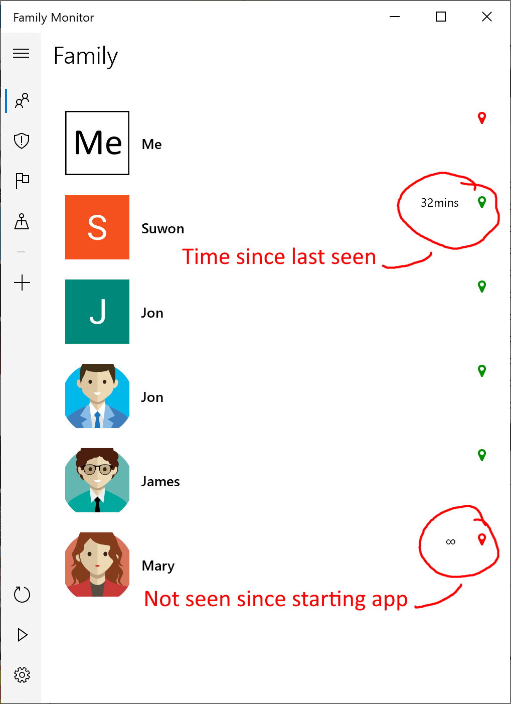
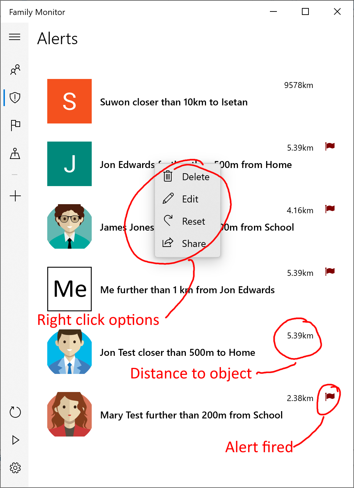
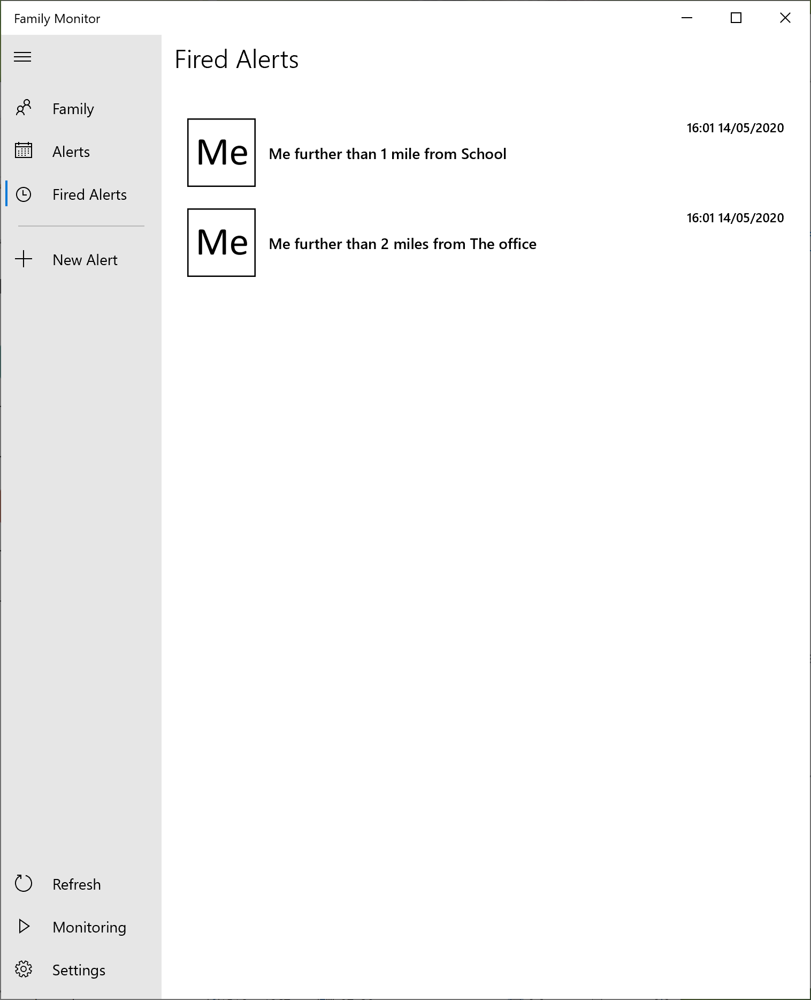
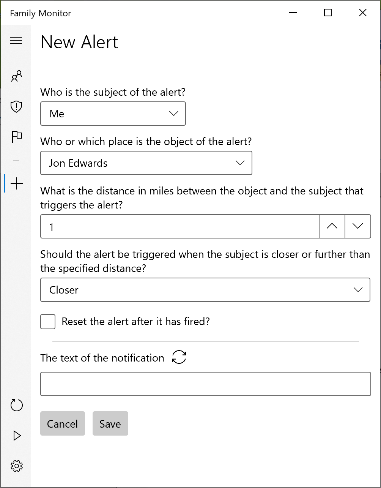
Family
Click a family member to view their location on the Map tab.
Alerts
Right click an alert to delete, edit, reset or share it. Click an alert to view the object of the alert's location on the Map tab.
Fired Alerts
Right click a fired alert to delete it. Click a fired alert to view the object of the alert's location on the Map tab.
Map
A browser view of Google Maps.
Settings
The following can be found on the settings page which is accessible via the cog button.
- Check frequency
How frequently to request an update of your family's locations from Google. A value lower than every two minutes is not possible.
- Alert Auto Reset
Whether to automatically reset an alert. For example, if an alert is set to fire when James is closer than 100m from home:
- Alert fires when James is closer than 100m from home
- Later, James is further than 100m from home
- Later still, James is again closer than 100m from home. If the alert auto resets, the alert will fire again. If the alert does not auto reset, a new alert will not fire.
- Alert Reset Period
How long to wait before resetting the alert. In the above example, the Alert Reset Period is, at step 2, how long James has to be further than 100m from home before the alert auto resets.
- Units of Distance
Whether the metric or imperial system should be used.
Privacy Policy
Family Monitor does not ask for, process or store any personal information apart from the names of the family members associated with alerts that the user creates. These alerts are only stored on the device running Family Monitor. In addition, the only network communication is to addresses (URLs) within the Google.com domain and to cyferorg.github.io when displaying this help page.
Google Maps Configuration
There are two things that need to be configured on Google Maps for Family Monitor to work effectively, both of which you may already have set up. (The following screenshots are from the Android version of the Google Maps app but the iSOS version is very similar.)
- Location sharing - those family members you wish to monitor must share their locations with you. Each family member may remove the sharing of their location at any time without notifying you, though you will notice that their location is no longer being shared with you. Let us assume you wish to monitor your son's location. You can either directly ask your son to use his Google Maps app (this stage can't be done using a browser) and configure Maps to share his location with you, or you can go into the Google Maps app and send an invitation to your son asking him to share his location. Detailed instructions can be found by googling or, for example, here.
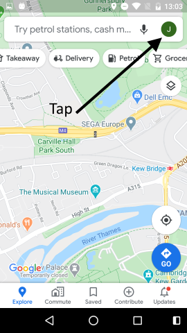
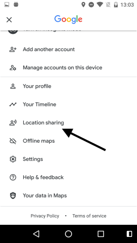
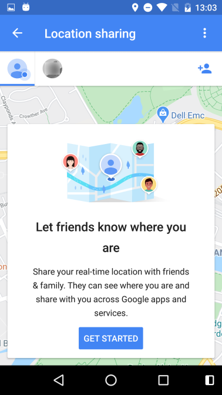
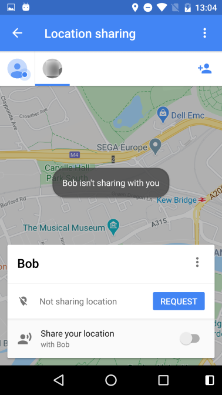
- Location bookmarks - these are geographic locations created in Google Maps that are available to Family Monitor for defining alert rules, for example, "my son is more than 2km from his school". The location of the school is defined in Google Maps (either using the app or a browser) and then it's used by Family Monitor. These locations can be created either using Google Maps to save the desired locations to the Google Maps Starred Places list or directly within Google's bookmarks page. For the former, find the required location, long press the location, tap the name or address that pops-up, tap Save and then save to the Google Maps "Starred places" list. (More detailed instructions can be found by googling or, for example, here). The location must be saved to the Starred places list for the location to show up in Family Monitor.
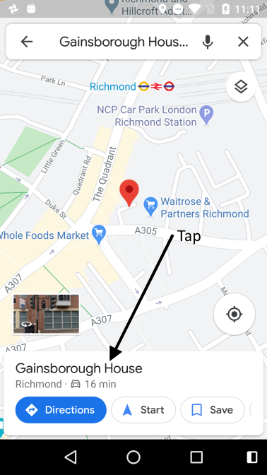
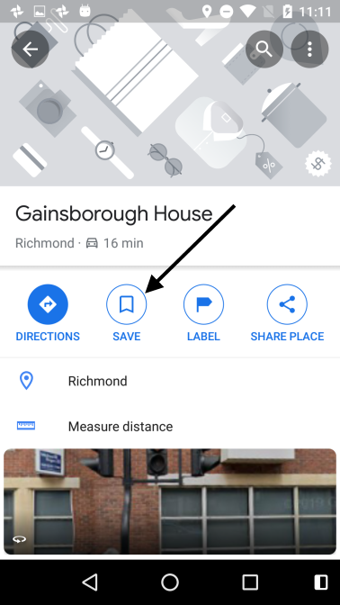
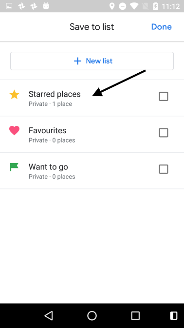
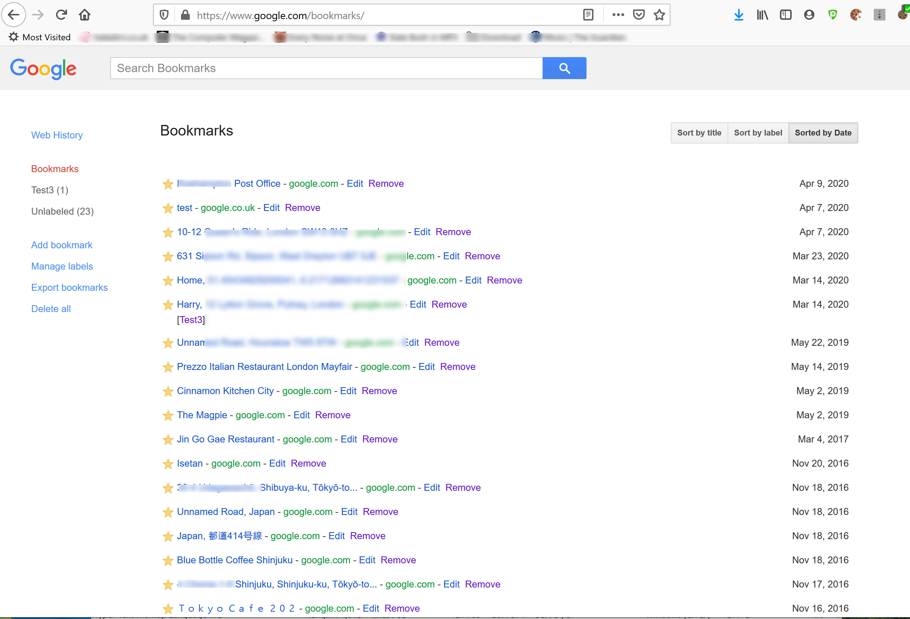
FAQ
- Change Google account - Tap the Logout button within Settings.
- Give a location a better (more descriptive) name in the list of objects - Using a browser, go to your Google bookmarks page, click Edit for the desired location and enter whatever you want in the Name field.